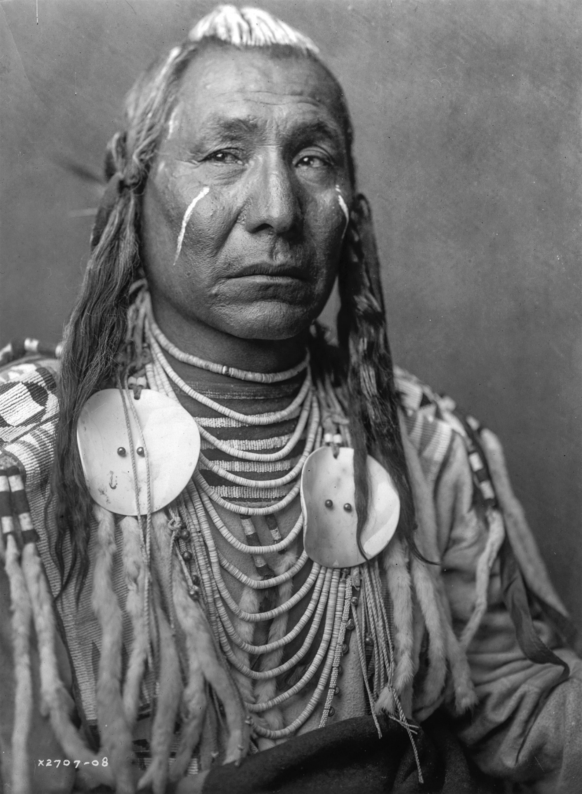

Les Indiens Utes
Les Indiens Utes sont un peuple autochtone d'Amérique du Nord, vivant principalement dans les États actuels du Colorado, de l'Utah et du Nouveau-Mexique. Ils font partie de la grande famille des peuples Uto-Aztèques.
Les Utes ont une riche histoire et une culture distincte, avec des traditions qui incluent la chasse, la pêche et la cueillette. Ils étaient également connus pour leurs compétences en équitation et leur artisanat, notamment la fabrication de paniers et de perles.
Aujourd'hui, les Utes continuent de préserver et de promouvoir leur héritage culturel tout en s'adaptant aux défis du monde moderne. Ils jouent un rôle actif dans la gestion de leurs terres et de leurs ressources naturelles, et ils travaillent à maintenir leurs traditions vivantes pour les générations futures.
